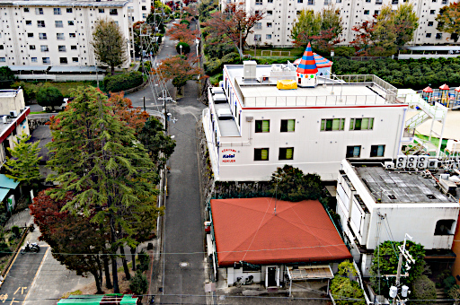
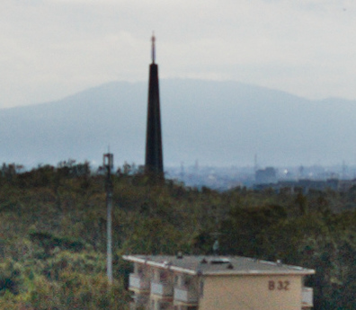
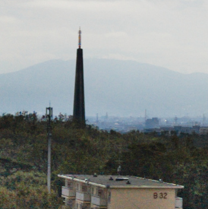
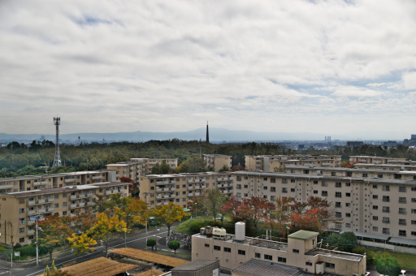
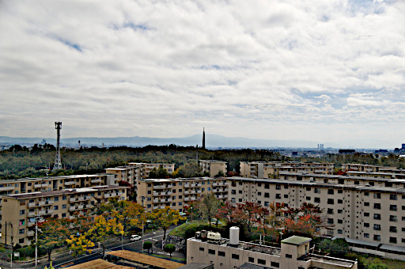

2018 年
11 月 04日 ( 日 )
不治の病
昨日 TAMRON SP AF17-50mm F2.8 XR DiII が新品交換で返ってきたけどやっぱり後ピンじゃんというお話をしました。今日はそれにまつわる恐ろしい不治の病について書きたきと思います。
私は昨日 24mm F2.8 AF で近所の保育園の看板を撮りました。下の写真がそうですね。

これを見て微妙にピントが合ってないと思い、MF で合焦するところから若干ピントを戻してその他は同じ条件で同じものを撮影しました。下の写真がそうですね。

昨日も述べたとおり若干ピントが改善されています。この結果 TAMRON SP AF17-50mm F2.8 XR DiII は MF で合焦させピントを少し戻さないと使い物にならない、私はそう思いました。
ですがこれは実は不治の病、等倍鑑賞病の症状だったのです。
だってですよ最初の条件、つまり 24mm F2.8 AF で撮った写真って下のような写真なんです。

Web に載せる都合上縮小しているとはいえ、下の写真でいったい誰が保育園の看板のピントが甘い、だからこの写真はダメだとか言うでしょうか？パソコンの画面いっぱいに画像を広げていても私だって普通言いません。
しかし等倍表示してピントが合ってない、解像度がイマイチだ、なんとかまともな画像にしたいとなんとかせずにはおれなくなるのが恐るべき病、等倍鑑賞病なのです。
でも物事には例外というものがあります。下の写真を見て下さい。遠景を 24mm F2.8 ND16 AF で撮ったものです。

そして同じく遠景を 24mm F2.8 ND16 MF 合焦から若干ピントリングを手前に戻したものが以下の写真です。

最初の画像の元画像が以下の画像です。Web 用に縮小しています。

次の画像の元画像が以下の画像です。やはり Web 用に縮小しています。

Web 用に縮小しているので違いがちっともわかりませんが、パソコンの画面サイズで見ると画像のシャープさが全然違います。後者のほうが断然画像が綺麗です。
なので TAMRON SP AF17-50mm F2.8 XR DiII は無限遠に近い焦点距離だけは MF で合焦させピントリングを若干戻すという使いかたをする他はなさそうです。
これがこのレンズの性質なのか、それともタムロンが主張するように PENTAX *ist DL2 がだめなのかは私が半年後に (それくらいかかりそうです) PENTAX K-70 を買えばわかります。
とはいえ Web で縮小して掲載する分には遠景でも AF で問題なさそうです。
- Category :
- 日記
- カメラ
- 写真
- レンズ
- タムロン
- TAMRON SP AF17-50mm F2.8 XR DiII